Dedicated mine plant
A project-specific plant at a licensed ASR or partner gold operation, integrating mining and processing under one operating system.
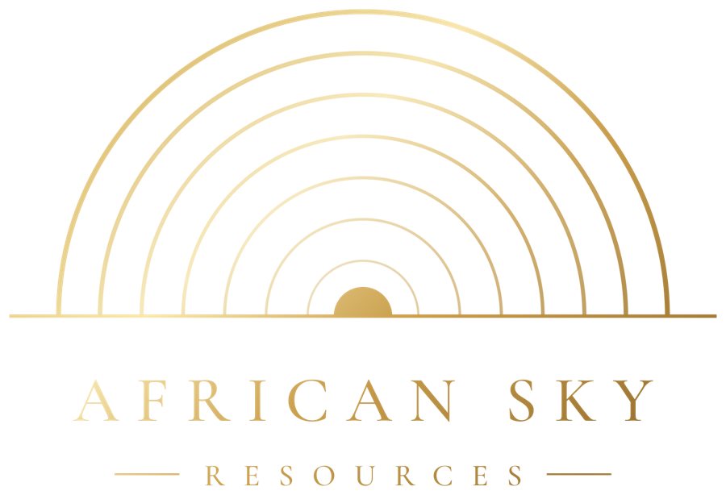
Mineral project developer · AfricaAfrican Sky Resources is a mineral project developer and strategic sponsor. We originate, structure and lead mineral projects, pairing pre-vetted local opportunities with proven technical execution partners such as KSGM.
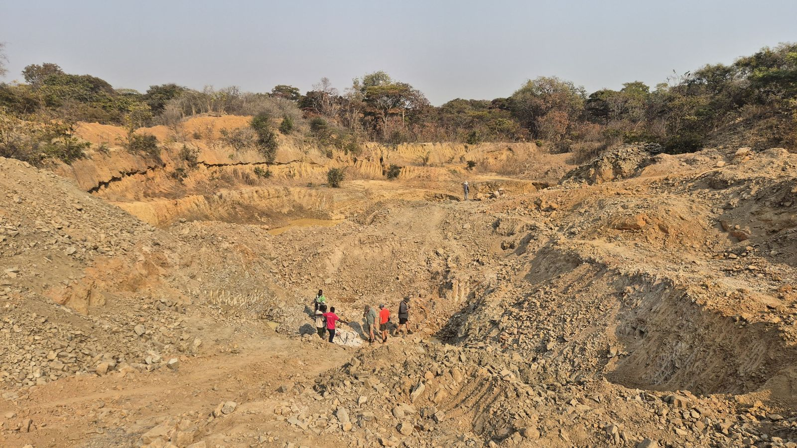
Mufumbwe District
Field visit, August 2026
ASR is a mineral project developer, strategic sponsor and project lead, not a traditional mining house. We originate, structure and manage mineral assets by pairing localised, pre-vetted opportunities with top-tier technical execution networks. We lead commercial deployment, regulatory alignment and key decisions across the pipeline, with executive monitoring and compliance control throughout.
To turn localised mineral opportunities into secure, sustainable and producing assets through disciplined legal structuring, institutional oversight and local inclusion.
Structured, agile joint-venture arrangements that move assets from artisanal production into consolidated small-scale mining licences without losing momentum.
Formal production, skills transfer, employment, local procurement, traceability and legitimate routes to market.
Four disciplines that take a local mineral opportunity from first engagement to structured, monitored production.
Unlocking ring-fenced local assets through robust legal frameworks designed for full regulatory compliance.
Capital-efficient development frameworks that match verified resources with established machinery and technical expertise.
Live management systems, operational transparency and strict commercial discipline across every phase.
Scaling projects methodically from artisanal production into consolidated Small-Scale Mining Licences (SSML).
One accountable sponsor, clear agreements on each side, and an experienced operator on site.
Government and rights holders
Project sponsor and developer
Operator and project manager
ASR holds the project, the capital and the Zambian relationships. KSGM, as the ASR Operator, operates and manages the project on ASR's behalf.
A practical, repeatable framework that starts from identified mineral assets rather than long-cycle exploration, and keeps value close to those nearest the asset.
We avoid long-cycle target generation and heavy exploration spend, starting instead from identified mineral assets that can be advanced and proven directly with lower initial risk.
A practical basis for early-stage advancement that reduces uncertainty at entry and lets projects progress with greater speed and confidence.
An agile, small-scale approach that moves equipment and technical support across workable project areas in a controlled, practical way.
Supported mobilisation into projects structured around offtake rights and development and expansion agreements with asset holders.
Internet access and live information systems bring real-time management and operational visibility to remote sites.
Project stability is built on the financial success of local asset holders, giving community legitimacy and keeping wealth connected to the operating area.
Structured access, aligned participation and development support reduce the disruption, conflict and misalignment that weaken many mineral projects.
Every system is calibrated to shorten the gap between mineral recognition, legal structuring, operational readiness and first production.
Participation across key parts of the project structure keeps more of the value created connected to those closest to the asset.
A framework that can be applied consistently wherever the right legal, technical and operating conditions exist, not a single isolated mechanism.
A field-driven execution capability that spans the full mineral development value chain, built through continuous deployment in frontier operating environments.
The group's operating history includes developing, activating and turning around multiple mines into viable commercial assets, from site activation and infrastructure rollout to steady operations.
Processing inside an engineered footprint with managed reagents, water, waste, rehabilitation and monitoring, with progressive rehabilitation and closure planning from the start of every project.
Our standardsRather than rigid, off-the-shelf plant, we develop processing flowsheets, automated solutions and extraction strategies configured around each orebody, terrain and operating constraint.
Open-pit and underground mining operations, and hands-on plant and mine management.
Direction of substantial capital project portfolios at a major gold refinery.
Multi-year vanadium beneficiation programmes taken from exploration research through pilot plant to steady-state output, plus industrial-scale extraction turnarounds.
The result for each project: rapid technical validation, low-cost pilot implementation, rigorous site execution and careful process route selection, moving assets predictably from ground mobilisation toward commercial production.
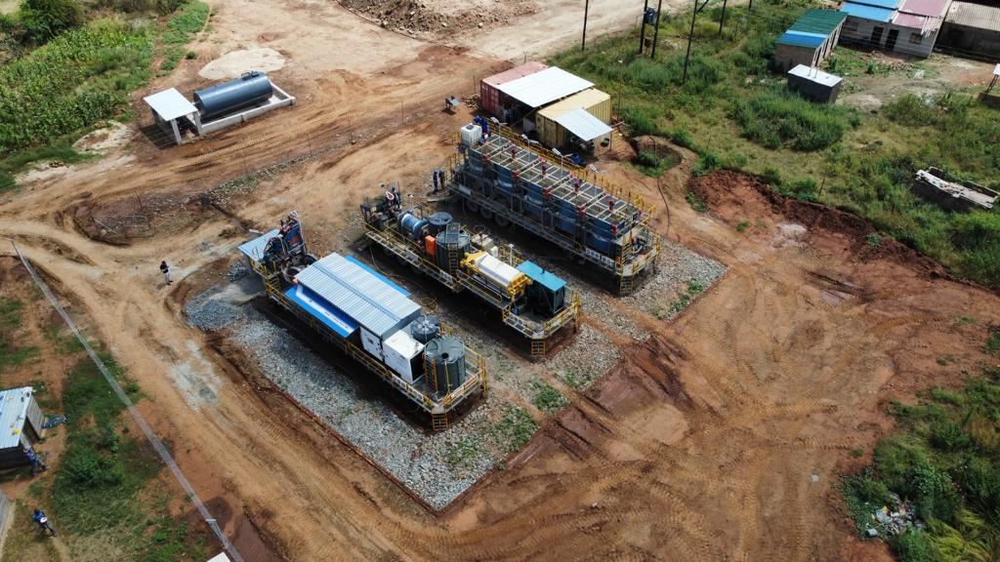
Modules and flowsheet are configured around ore characteristics, site conditions and required controls.
Transportable, reducing the need for extensive permanent infrastructure at an early stage.
Deployed and operated by KSGM on ASR's behalf, with assay capability, access control, CCTV, GPS tracking, Wi-Fi and remote data capture.
The core recovery stages run in one managed system. In Zambia, each installation is subject to ore test work, detailed engineering and the applicable approvals before deployment. The aim is repeatable metallurgical control in place of informal, dispersed and hard-to-monitor processing.
ASR sets the requirements; the operator builds them into each site from mobilisation onward.
Long-term stability and asset protection rest on a governance architecture backed by more than 40 years of experience in international mining finance, cross-border mergers and acquisitions, and complex legal structuring.
Every gram accounted for, from licensed source to approved buyer.
Identify the licensed source and record origin.
Controlled weighing, sampling and lot identification.
Transparent grade determination and quality control.
Managed recovery through a defined flowsheet.
Mass balance, recovery data and gold accounting.
Legitimate, documented route to approved buyers and channels.
Flexible deployment models, selected jointly with the relevant authorities and rights holders after technical and regulatory review.
A project-specific plant at a licensed ASR or partner gold operation, integrating mining and processing under one operating system.
A modular plant serving suitable licensed ore sources in a defined district, subject to rights, licences, environmental approvals and commercial arrangements.
Partnering with government, licence holders or cooperatives to introduce technical support, safer processing, training, traceability and formal market access.
Alignment reflects current public information from Zambia's Ministry of Mines and Minerals Development and ZEMA on formalisation, value addition and environmental performance.
ASR requires its operator to build Zambian capability at every level.
Our first Zambian focus area. Government has begun formalising artisanal gold mining in Mufumbwe through licensed cooperatives, which is the setting ASR's cooperative and ASM support model is built for.
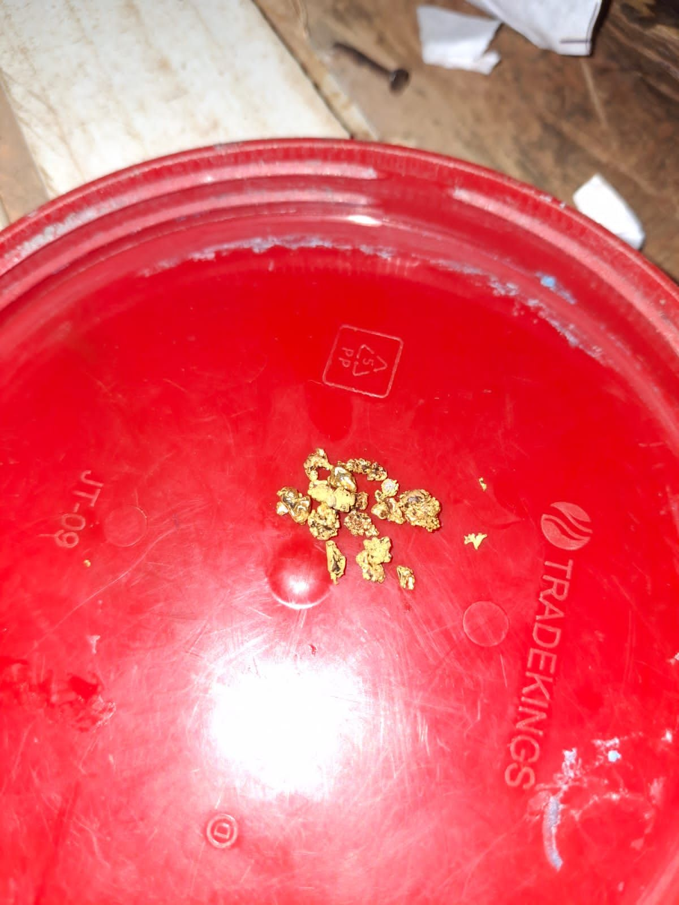
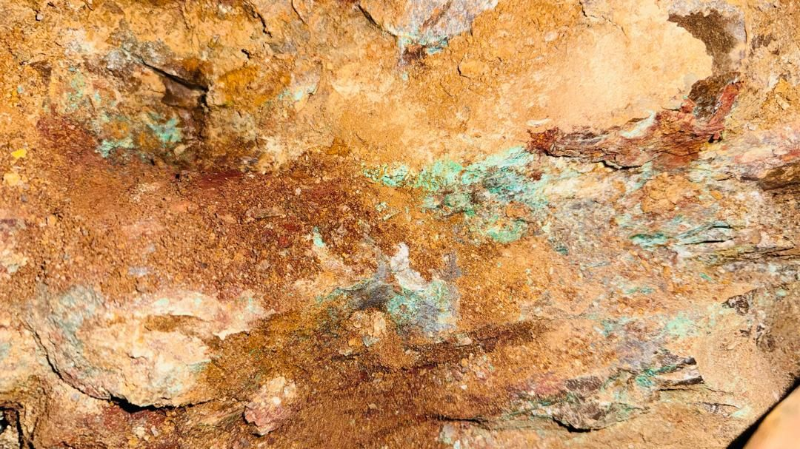
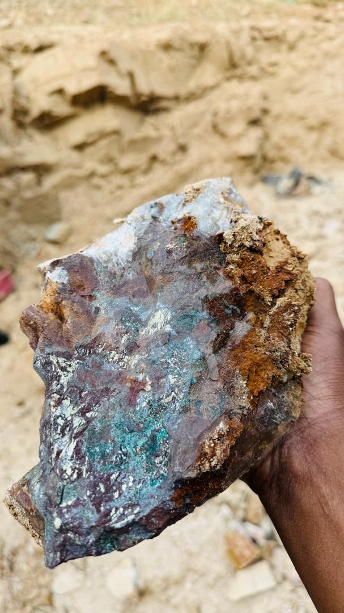
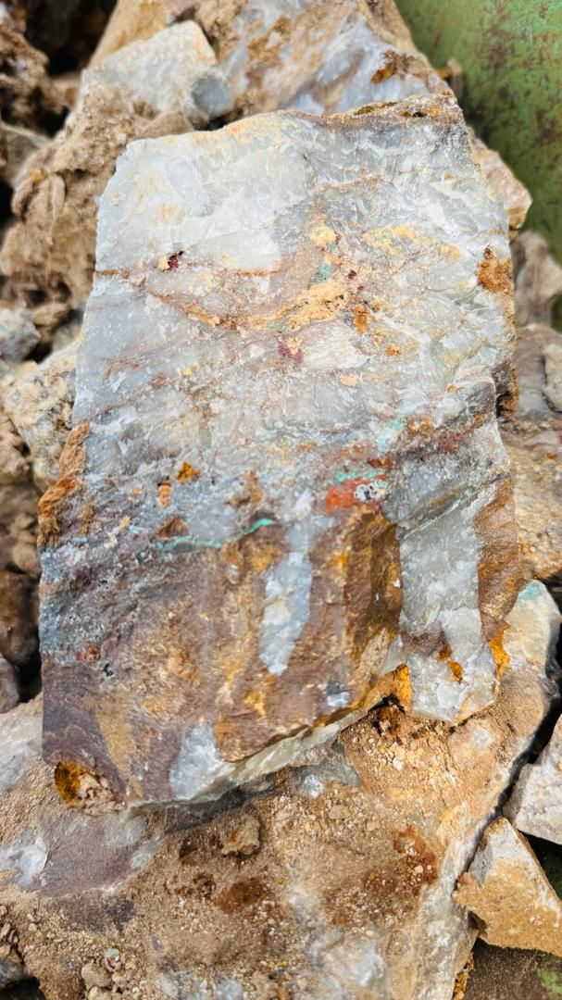
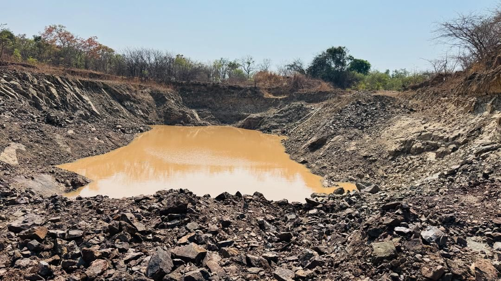
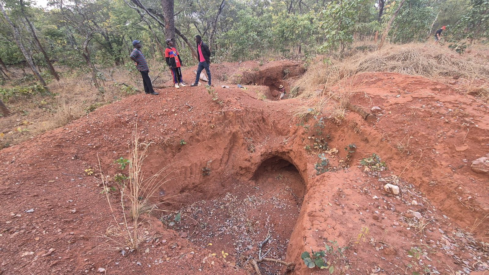
Photographs from an August 2026 field visit. No mineral resource or reserve has been declared and no assay results are reported here. Samples shown are unassayed.
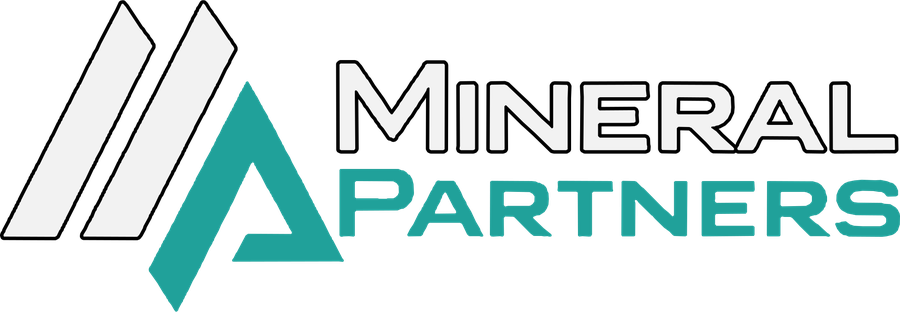
Mineral Partners, part of the African Sky Resources group, is advancing a copper development platform in Southern Province, Zambia. It uses a staged, licence-led framework with aligned local participation and integrated processing.
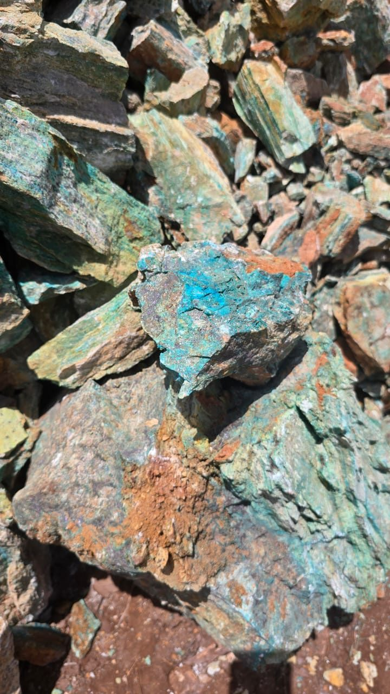
Multi-licence development to reduce risk and enable scale.
Integrated mining and processing to strengthen margins.
Early production with disciplined reinvestment.
Structured local alignment to secure access and continuity.
Modular processing and equipment ownership for flexible growth.
Focus on shallow mineralisation, with capital deployed stage by stage.
Land access, stakeholder alignment, SPV formation and early technical work.
Targeted drilling, confirmation of priority zones and mine planning.
Licensing progression, infrastructure preparation and processing readiness.
Processing deployment, production expansion and value-chain integration.
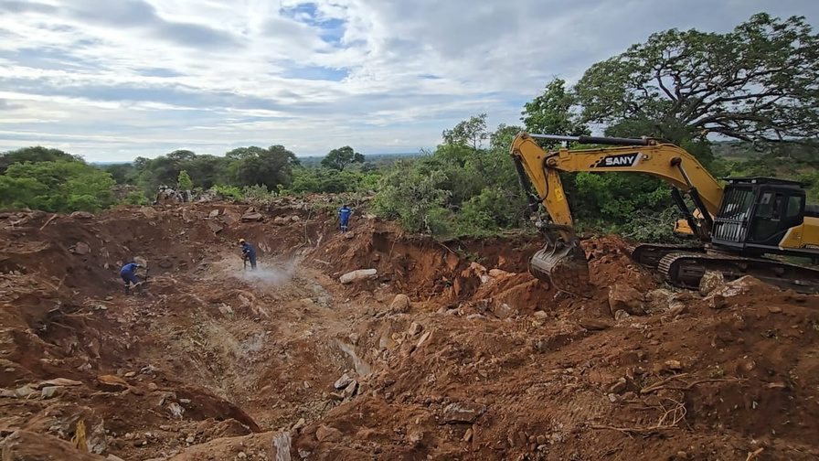
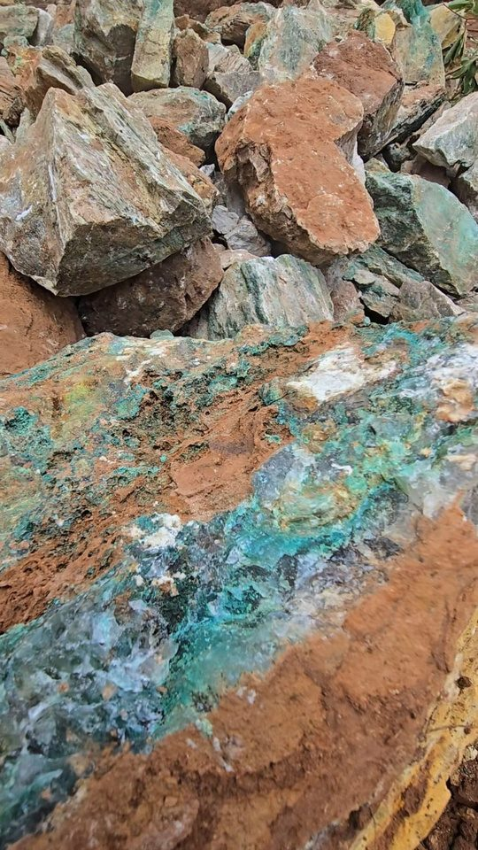
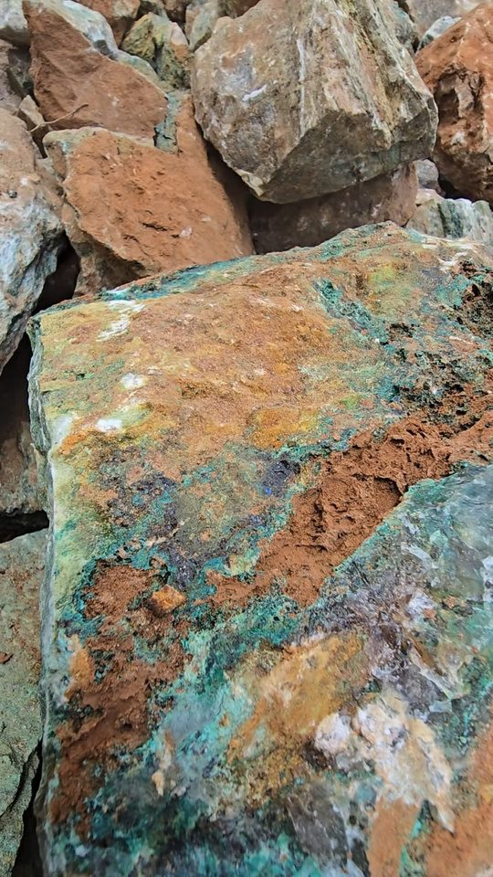
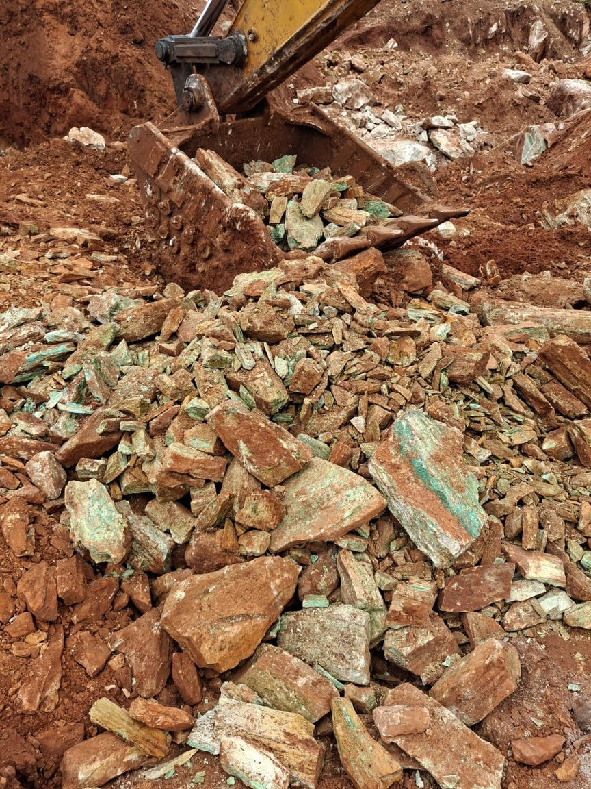
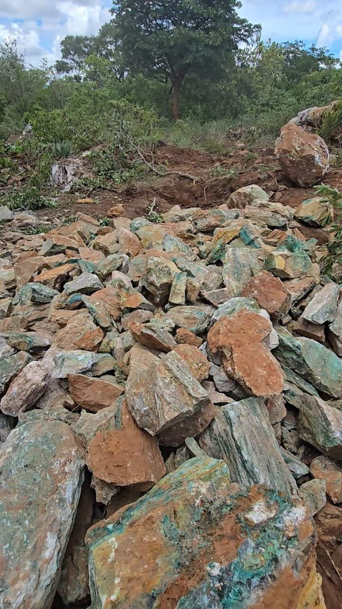
Early-stage project. No mineral resource or reserve has been declared, and this page reports no grades or financial information. Nothing here is an offer of, or invitation to subscribe for, any investment.
From engagement to demonstration, then responsible replication.
ASR identifies the priority gold area, rights-holder structure and development objectives.
Geology, sampling, metallurgical test work, water, access, power and community context.
Confirm mining and processing rights, ZEMA requirements and site-specific approvals.
ASR and KSGM configure the mobile plant, environmental controls, security, staffing and operating procedures.
Commission a controlled pilot and measure safety, recovery, environmental and operating performance.
Use verified results to consider expansion to additional suitable areas.
KSGM, the ASR Operator, brings decades of African mining, processing, legal and investment experience to the project.
Technical Director, KSGM
Twenty years executing precious and bulk commodity projects in South Africa, Zimbabwe, the DRC, Republic of Congo and Guinea. Leads technical execution on the ASR Zambian project.
Mining and Processing, KSGM
More than 20 years in underground and open-pit mining, processing and project management across Africa. Leads ore evaluation, flowsheets, plant configuration and commissioning.
Corporate Development and Investment, KSGM
Lawyer with 25 years in mining finance and M&A. Founding member of Atlatsa Holdings and its Chief Commercial Officer from 2005 to 2014.
Legal and Commercial, KSGM
Corporate lawyer and former senior partner at Mallinick Ress Richman & Closenberg. Supports legal structuring, governance and contractual frameworks.
Investment and Corporate Development, KSGM
Former Bain & Company consultant focused on private equity and natural resources. Supports investment analysis and transaction structuring.
Our proposed next step is to engage with the relevant Zambian authorities and stakeholders, identify a suitable pilot, complete technical and regulatory due diligence and, with KSGM as operator, configure a mobile processing solution for the selected orebody and site.